SmartTools Add-on Manual
SmartRender Suite Manual
Version 1.0.0 / November 19, 2026 / For Blender 5.1.2
SmartRender Suite is an add-on that handles rendering (writing out images or movies) work in one place. It lets you set quality, check output paths, and render multiple cameras and view layers one after another. From the same panel, you can also prepare compositing passes (images with color, depth, normals, and so on written out separately) and render with different settings (Variants and Takes). To get started, you only need to remember three buttons: "Prepare Scene Setup", then "Preview Output Paths", then "Run Render Queue".
1. What This Add-on Does
An add-on that handles render preparation, output path checks, and batch rendering in a single panel.
- Set quality ("Draft", "Preview", "Final"), the render engine, and the image format together.
- Before actually rendering, check which folder and what file names the images will be saved under ("Preview Output Paths").
- Build a render schedule (Render Queue) from combinations of cameras and view layers, and run it in order.
- Save differences in camera, frame range, quality, and more as "Variants and Takes", then switch between them and render.
- Choose compositing passes (ZDepth, Normal, Cryptomatte, and so on) and automatically build the nodes that write them to files ("Render Elements").
- After rendering, check that the files were written correctly ("Verify Outputs After Render").
- Put the FFmpeg command that makes a movie from a frame sequence into the exported script or settings file ("Encode Movie From Frames").
- Export a settings file (JSON) and run scripts (.sh / .bat) for network rendering and render farms.
- Load helper tools for rendering, such as camera image planes, camera rigs, three-point lighting, and sun position, from "Other Tools" only when you need them.
- When you want to render images for each cut (shot) using the same naming rules.
- When you want to render several cameras one after another in a batch.
- When you want to switch settings and render, such as light quality for review and high quality for delivery.
- When you want to write out passes other than color as well, for compositing work.
- When a render stops partway and you want to resume where it left off by reusing the frames that already exist.
At a Glance
This is how the screen changes when you use this add-on. Chapter 5 walks through the exact steps in the "Example" boxes for each feature.
ExamplePlace Three Lights Around the Selected Object with "Three-Point Lighting"(demonstrated on Suzanne and a floor (with a camera))
Place the three standard photography lights around the selected object at once: Key (main light), Fill (supporting light), and Back (light from behind). The direction of the lights is based on the camera position. If there is no camera, or if the camera is at the same position as the object or directly above it, the lights are placed as if viewing the object from the front (-Y side).
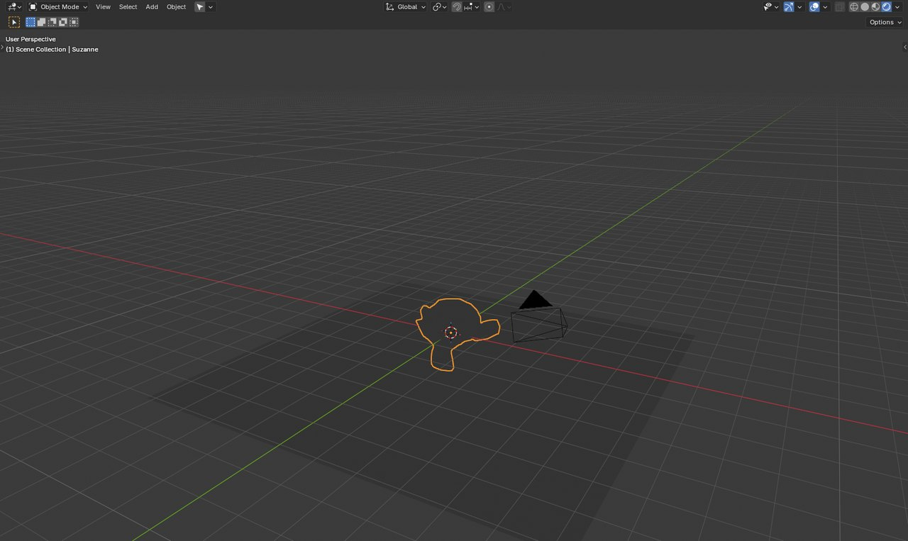
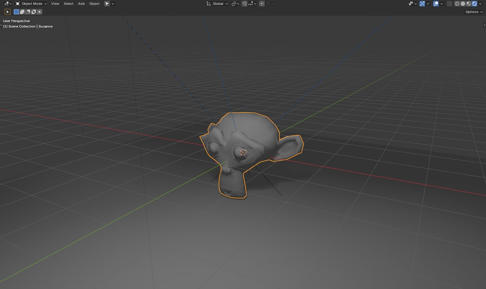

- Select Suzanne.
- In "Smart Render" tab > "Other Tools", expand the "Three-Point Lighting" row and click "Load".
- Click "Create Three-Point Lighting" in the "Quick Access" area that appears.
What to look for: Suzanne, which was pitch dark with no lights, is now lit by the three lights placed around it (Key, Fill, and Back), and its shape and shading are visible. The zoomed-out view shows that the three lights are placed in positions surrounding Suzanne.
ExampleSet Up the Schedule and Diagnosis with "Prepare Scene Setup"(demonstrated on Suzanne and a floor (with a camera))
"Prepare Scene Setup" builds the render schedule and also runs the preliminary diagnosis, all in one step. The look of the 3D Viewport does not change. The results appear in "Queue Jobs" and "Audit" in the N panel.
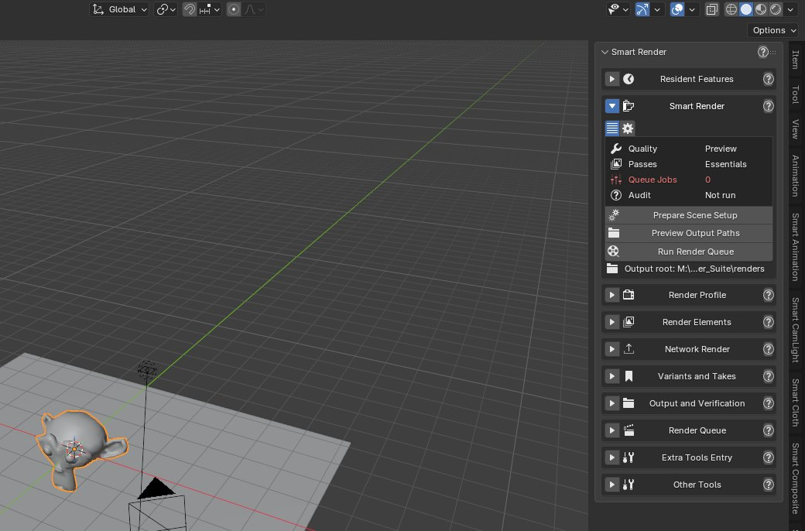
- Open "Smart Render" tab > "Smart Render".
- Click "Prepare Scene Setup".
- Check "Queue Jobs" and "Audit".
What to look for: "Queue Jobs" changes from 0 (red) to 1, and "Audit" changes from "Not run" to the diagnosis result ("Warnings" in this example). You can read the details of the warnings in "Logs", which appears when you turn on the gear icon ("Show Advanced") in "Smart Render". At this point, you can move on to "Preview Output Paths" and "Run Render Queue".
2. Key Features
This chapter walks through the features unique to this add-on, using numbered callouts on each figure. The numbers in a figure match the numbered list below it. Click a figure to enlarge it. Each individual setting is described under its own heading in Chapter 5.
2-1. From Preparation to Rendering with Three ButtonsThe Top Selling Point
To start a render, you normally set up the output settings, the combination of passes, the output names, and the render order on separate screens first. In the "Smart Render" panel, just click the three buttons "Prepare Scene Setup", "Preview Output Paths", and "Run Render Queue" from the top, and it goes all the way through building the render schedule (Render Queue), the preliminary diagnosis, previewing the output location, and rendering. You can always see the current state in the four-row area at the top of the panel.
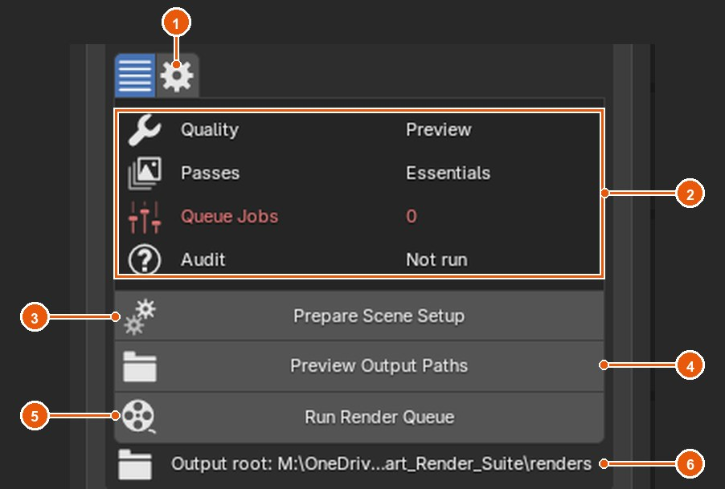
- 1Show Advanced (gear): When turned on, section headers for advanced users such as "Dashboard" and "Logs" and detailed settings appear
- 2Status Area: From the top: Quality, Passes (the combination of compositing passes), Queue Jobs (the number planned to be rendered), and Audit (the result of the diagnosis). It turns red when a count is 0 and when the diagnosis finds a warning or error
- 3Prepare Scene Setup: In one go, cleans up fragile settings, applies the Render Profile, rebuilds the Render Queue, and runs a preliminary diagnosis. The look of the 3D Viewport does not change
- 4Preview Output Paths: Without actually rendering, checks the paths of the files that would be saved and writes them to "Logs". They also appear in "Selected Queue Preview" in ⑨
- 5Run Render Queue: Renders the enabled rows of the Render Queue in order from the top. If output names overlap, they are given different names to avoid the conflict
- 6Output Root: The parent folder of the output. Long paths are shortened in the middle
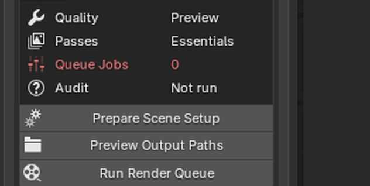
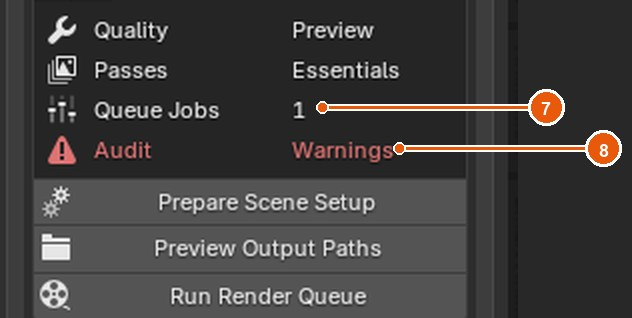
- 7Queue Jobs: The 0 (red) became 1. The render schedule has been built
- 8Audit: "Not Run" changed to the diagnosis result (in this example, a red "Warnings"). You can read the details of the warning in "Logs", which appears when you turn on ①
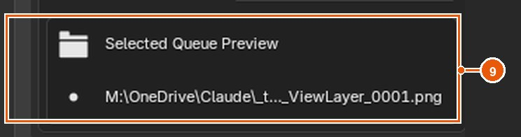
- 9Selected Queue Preview: When you click ④ "Preview Output Paths", the output location and file name of the selected row appear here. You can check the name before rendering
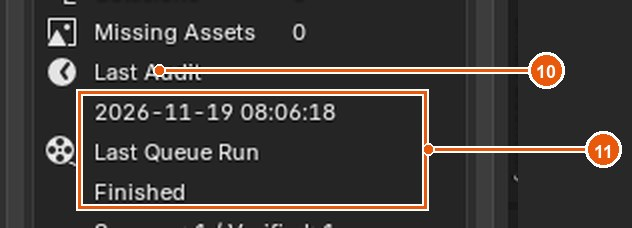
- 10Last Queue Run: The render result. "—" changed to "Finishing"
- 11Counts: In this example, 1 image was rendered and "Success" is 1. This area turns red if there are any failures or verify failures
- In the "Smart Render" tab of the Sidebar (N panel), open "Smart Render".
- Click ③ "Prepare Scene Setup", then look at "Queue Jobs" and "Audit" in ②.
- Click ④ "Preview Output Paths", and check the output location and file name in ⑨ "Selected Queue Preview".
- If there are no problems, click ⑤ "Run Render Queue".
- When "Audit" is red, turn on the gear in ① and read the details of the warning in "Logs".
- ④ "Preview Output Paths" does not render, so you can check just the output location and file names first without spending time.
- The counts are recounted automatically a moment after the scene or settings change. Until it has counted for the first time, it shows "—".
Settings in detail: 5-2. Smart Render, 5-11. Render Queue, 5-3. Dashboard, 5-10. Output and Verification
2-2. Build Per-Pass Output Nodes with a ButtonNo Hand-Built Nodes
To write passes such as depth, normals, and shadows (render elements) out as separate images, you normally create File Output nodes in the compositor and connect the passes one by one. In "Render Elements", just check the passes you want to render and click "Prepare Render Elements" and "Refresh Nodes", and those nodes and links are created. You can choose frequently used combinations all at once with "Quick Set".
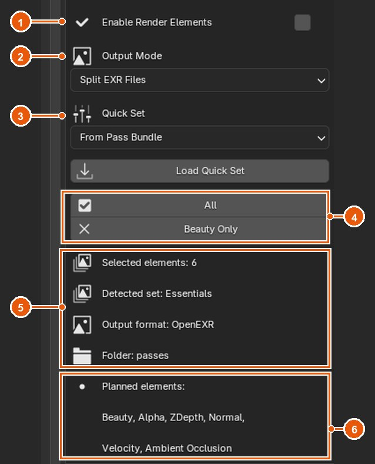
- 1Enable Render Elements: When turned on, the checked passes are included in the render output
- 2Output Mode: "Split EXR Files" (a separate file for each pass) or "Multilayer EXR" (one file per view layer)
- 3Quick Set: Choose a frequently used combination such as "Composite", "Lookdev", "Lighting", or "Crypto / ID", then click "Load Quick Set" to put it into the checkboxes below
- 4All / Beauty Only: "All" checks every box. The "Beauty Only" button selects only 1 element, the normal color image
- 5Resolved Set and more: The number of selected passes, the combination actually used ("Resolved Set"), the saving format, and the output folder
- 6Planned elements: The names of the passes planned to be written out. They use the same names as the checkbox area below
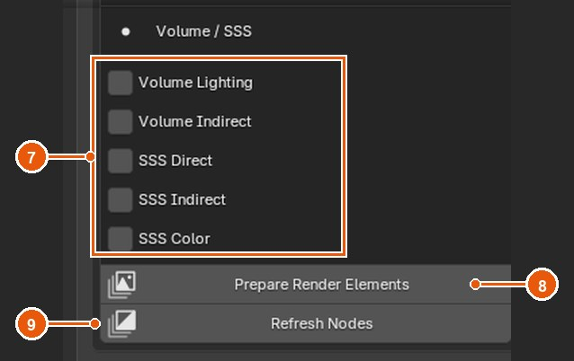
- 7Pass Checkboxes: Turn "Beauty", "ZDepth", "Normal", "Velocity", and so on on or off one by one for each type (the figure shows the last part)
- 8Prepare Render Elements: Sets up the required pass settings and the nodes that write to files (File Output nodes) together
- 9Refresh Nodes: Rebuilds the File Output nodes from the passes that are currently on
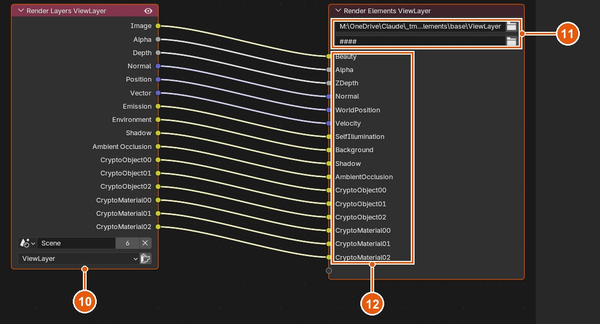
- 10Render Layers Node: The render result. Links run from the outputs of the checked passes to the output node on the right
- 11Output Location and File Name Format: The frame number goes where #### is
- 12Input Names: In English regardless of language (Beauty, ZDepth, and so on). With "Split EXR Files", the frame number and the input name become the file name (example: 0001Beauty.exr)
- On the "Smart Render" tab, open "Render Elements" and turn on ① "Enable Render Elements".
- In ③ "Quick Set", choose a combination and click "Load Quick Set" (you can also pick elements one at a time with the checkboxes in ⑦).
- Click ⑧ "Prepare Render Elements", then click ⑨ "Refresh Nodes".
- In the Compositor node editor, check the nodes that were built.
- The "Beauty Only" button creates 1 element, while the "Beauty Only" Quick Set creates 2: Beauty and Alpha.
- If you forget to click ⑨ after changing the checkboxes, the nodes are rebuilt to match the current checkboxes when you click "Run Render Queue".
- If you turn off all the checkboxes, only Beauty is written out.
- With "Multilayer EXR", each frame becomes one file named after the view layer and the frame number (example: ViewLayer_0001.exr).
Settings in detail: 5-5. Render Elements
2-3. Save Camera Variations and More, and Switch with One ButtonInherit from Parent
When you render several versions with different cameras or view layers, you normally have to switch the scene by hand each time. With "Variants and Takes", you can save the current combination under a name with "Save Current" and bring it back with "Apply". If you choose a parent, any item you have not set is inherited from the parent, so you only need to set what differs. Set "Queue Source" in "Render Queue" to "Variants and Takes" to render each saved combination.
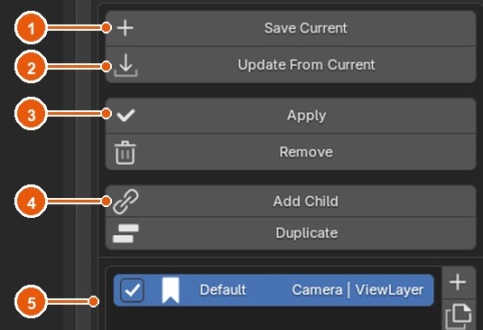
- 1Save Current: Creates a new variant and take from the current camera, view layer, World, and so on
- 2Update From Current: Captures the current view layer override state into the selected item
- 3Apply: Applies the selected item to the current scene
- 4Add Child: Creates a child of the selected item ("Remove" above and "Duplicate" below are laid out the same way)
- 5List: Shows the saved items. One "Default" item is included from the start
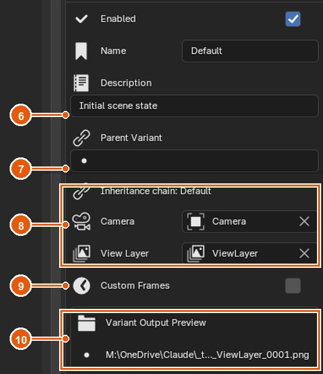
- 6Parent Variant: If you choose a parent, items you have not set inherit the parent's settings
- 7Inheritance Chain: Shows the order of inheritance
- 8Camera / View Layer: The camera and view layer used by this combination
- 9Custom Frames: When turned on, uses a frame range (start and end) for this item only
- 10Output Preview: An example of the saved file path. It updates a moment after you change a setting
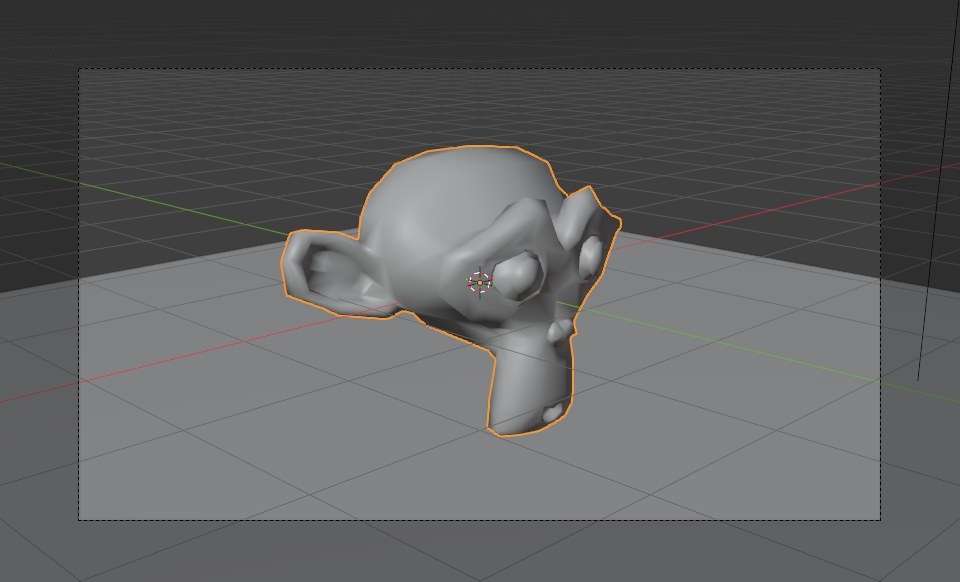

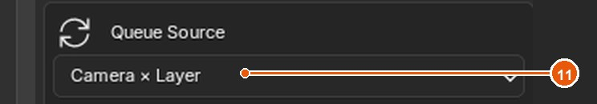
- 11Queue Source: When set to "Variants and Takes", a row is created for each saved combination to render
- Set the camera and other items, click ① "Save Current", and enter a "Name". Save other combinations the same way.
- Select a row in the list and click ③ "Apply" to return to that combination.
- To change only what differs, create a child with ④ "Add Child" and set only the items you want to change (⑥ inherits from the parent).
- To render everything at once, set ⑪ "Queue Source" to "Variants and Takes".
- Normally the name, parent, camera, and layer are enough, plus the frame range if needed.
- Turn on the gear icon's "Show Advanced Items" to add fields that override the engine, quality, resolution, World, output root, and so on for each combination.
Settings in detail: 5-9. Variants and Takes, 5-11. Render Queue
3. Getting Started
How to install the add-ons, how to change the interface language, and how the N panel and the "?" help buttons work in every add-on are covered in the "SmartTools Overall Specification". Please read chapters 2 to 5 there first.
| ZIP to install | SmartRenderSuite_1.0.0.zip |
|---|---|
| Name shown in Blender | Smart Render |
| Supported Blender | 5.1.2 |
4. Where to Find It
It is in the "Smart Render" tab of the Sidebar (N panel) on the right side of the 3D Viewport.
| Editors | 3D Viewport, Image Editor, node editors, Video Sequencer, and others (the same content also appears in the Sidebar of editors allowed in the Smart Tools Manager settings) |
|---|---|
| Tab | Smart Render |
| Mode | Works in any mode (no active object is required). |
- For installation, Japanese localization, how to open the N panel, and how to use the "?" help button, see the chapters "Getting Ready" and "The N Panel and the "?" Help Button" in the SmartTools Overall Specification.
- In the Sidebar of the 3D Viewport, click the "Smart Render" tab.
- Inside the panel, collapsible section headers are lined up (each has a triangle button on the left). Click a section header to open its contents.
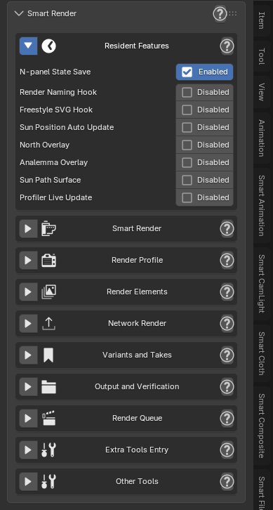
5. Features
Each heading is explained in order from the top of the panel. Click the "?" to the right of a heading to show the same explanation in Blender. The blue "Example" boxes show real operations on simple models such as Suzanne, with the 3D Viewport before and after.
5-1. Resident Features
Here you turn on or off only the features that run automatically in the background without any button press. Turning off the ones you do not use keeps everyday work light.
LocationThis is the topmost section header of the "Smart Render" tab.
| Item | What it does |
|---|---|
| N-panel State Save | When the button on the right is "Enabled", the opening and closing of section headers and changes to panel settings are saved to a file in Blender's configuration folder. The next time you open Blender, the same state is restored. |
| Render Naming Hook | Only when a render starts, builds the output name from a template, and restores the original path when it finishes. Enable it only when you replace names with "Render Output Naming". |
| Freestyle SVG Hook | Enable it only when you want Freestyle line art to be written out automatically as SVG (line data) at render time. |
| Sun Position Auto Update | Automatically updates the sun position of "Sun Position Control" on playback, frame change, and file open. |
| North Overlay / Analemma Overlay / Sun Path Surface | Draws the direction of north, the sun's path over a year, and the plane the sun travels through in the viewport. Enable them only when you need them. |
| Profiler Live Update | Updates the "Render Profiler" measurements in the background. Enable it only when you are measuring. |
5-2. Smart Render
This section header lets you see the state of the current scene at a glance and perform the three most-used operations. At first, this section is all you need.
LocationThe section header right below "Resident Features".

| Item | What it does |
|---|---|
| Compact Mode (horizontal lines icon) | Shortens the panel by reducing spacing and supplementary text. |
| Show Advanced (gear icon) | When turned on, adds section headers for advanced users ("Dashboard", "Workflow Recipes", "Execution Plan", "Bridge", "Logs") and detailed settings. |
| Status Area (the area with four rows of icons and values) | From the top, it shows Quality, Passes (the combination of compositing passes), Queue Jobs (the number of planned renders), and Audit (the result of the diagnosis). "Queue Jobs" is shown in red when it is 0, and the row is also red when the diagnosis finds a warning or error. "Not Run" means the diagnosis has not been run yet. The counts are recounted automatically a moment after the scene or settings change (including when you toggle a camera's "Disable in Renders"). In a scene with many objects, a short delay is added, and the previous numbers remain during that time. Until it has counted for the first time, it shows "—". |
| Prepare Scene Setup | Runs everything together: cleaning up fragile settings, applying the Render Profile, rebuilding the Render Queue, updating File Output nodes when needed, and running a preliminary diagnosis. The look of the 3D Viewport does not change. The results appear in the notice at the bottom of the screen and in the counts and diagnosis of the Dashboard. |
| Preview Output Paths | Without actually rendering, checks the paths of the files that would be saved with the current settings and writes them to "Logs". "Selected Queue Preview" in "Render Queue" also shows the output location of the selected row. |
| Run Render Queue | Renders the enabled rows of the Render Queue in order from the top. If output names overlap within the queue, they are given different names to avoid the conflict. |
| Output Root | Shows the parent folder of the output. Long paths are shortened in the middle. |
- Click "Prepare Scene Setup".
- Click "Preview Output Paths", then check the output location and name in "Selected Queue Preview" in "Render Queue".
- If there are no problems, click "Run Render Queue".
ExampleSet Up the Schedule and Diagnosis with "Prepare Scene Setup"(demonstrated on Suzanne and a floor (with a camera))
"Prepare Scene Setup" builds the render schedule and also runs the preliminary diagnosis, all in one step. The look of the 3D Viewport does not change. The results appear in "Queue Jobs" and "Audit" in the N panel.
- Open "Smart Render" tab > "Smart Render".
- Click "Prepare Scene Setup".
- Check "Queue Jobs" and "Audit".
What to look for: "Queue Jobs" changes from 0 (red) to 1, and "Audit" changes from "Not run" to the diagnosis result ("Warnings" in this example). You can read the details of the warnings in "Logs", which appears when you turn on the gear icon ("Show Advanced") in "Smart Render". At this point, you can move on to "Preview Output Paths" and "Run Render Queue".
5-3. Dashboard
This section header lets you check the settings and diagnosis results together before rendering.
LocationIt appears below "Smart Render" only when "Show Advanced Items" is turned on.
| Item | What it does |
|---|---|
| Engine / Quality / Execution Plan Device / Chunk Size | Shows the current render engine, the quality, the policy for the device to use (CPU, GPU, and so on), and how many frames each chunk contains. |
| Effective Compositing / Effective Verify Scope | Shows the saving method that is actually used and the range of outputs that is checked. "Effective Compositing" is shown in red when you choose something other than "Auto" and the actual method differs (it does not turn red when set to "Auto"). "Effective Verify Scope" is shown in red when the range chosen in "Verification Scope" differs from the actual range. |
| Cameras / View Layers / Variants / Queue Jobs / Planned Renders | Shows the numbers in the scene and the number planned to be rendered. Except for "Variants", each is shown in red when it is 0. The numbers are recounted automatically a moment after the scene or settings change (including when you toggle a camera's "Disable in Renders"). In a scene with many objects, a short delay is added, and the previous numbers remain during that time. Until it has counted for the first time, it shows "—". |
| Resume Mode / Output Verification / Verify Scope / Min Size KB (KB) / Verify Retries / Movie Encode | Shows the settings for resuming renders and for checking output. |
| Output Root / Audit Status / Risk Score / Collisions / Missing Assets / Last Audit / Last Queue Run | Shows the diagnosis results and the results of the last run. Items with problems are shown in red. "Last Queue Run" shows "Finishing", "Aborted by Error", or "Aborted by preflight" along with the counts (success, verified, skipped existing, auto-renamed, failed, verify failed, removed invalid). It turns red if there are any failures or verify failures. |
ExampleAdding a Camera Changes the Numbers in the Dashboard(demonstrated on Suzanne and a floor (with a camera))
The numbers in "Dashboard" are recounted automatically a moment after the scene changes. The number of cameras and the red display tell you whether you are ready to render.
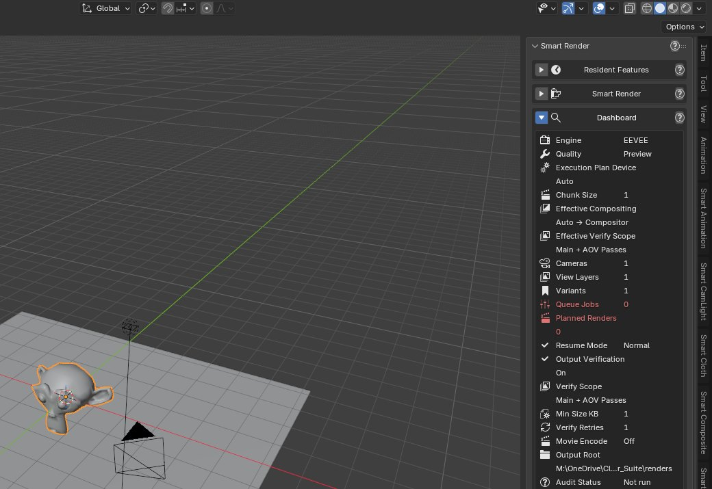
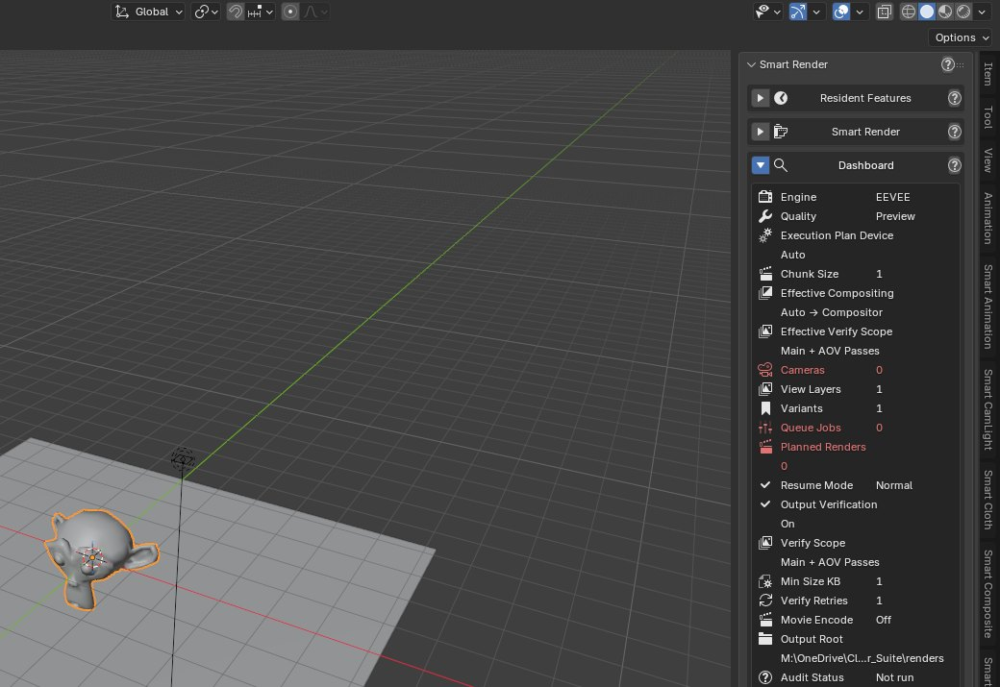
- Turn on the gear icon ("Show Advanced") in "Smart Render".
- Open "Dashboard".
- Add or delete a camera, and check "Cameras".
What to look for: When you add a camera, "Cameras" becomes 2. When you delete them all, it becomes 0 and is shown in red, so you can see right away that there are not enough cameras.
5-4. Render Profile
Sets the basic render policy (engine, quality, resolution, image format, and so on) all at once.
LocationThe section header below "Smart Render" (below "Dashboard" when "Show Advanced Items" is turned on).
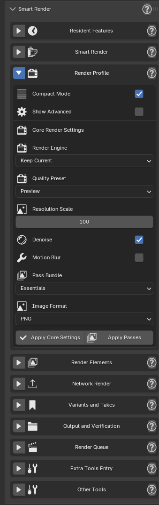
| Item | What it does |
|---|---|
| Compact Mode / Show Advanced | The same toggles as the buttons in the "Smart Render" section header. |
| Render Engine | Choose from "Keep Current", "Cycles", "Eevee", and "Workbench". |
| Quality Preset | Choose from "Draft" (check as fast as possible), "Preview" (a balance between speed and quality), and "Final" (for submission and delivery). |
| Resolution Scale | The size ratio of the rendered image. |
| Denoise / Motion Blur | Sets the processing that reduces noise and whether to add motion blur. |
| Pass Bundle | The combination of compositing passes. Choose from "None", "Essentials", "Composite", "Lookdev", "Lighting", "Crypto / ID", "Technical", and "Dataset". |
| Image Format | Choose from "PNG", "OpenEXR", "OpenEXR Multilayer", "JPEG", "TIFF", and "WebP". |
| Apply Core Settings | Applies the chosen engine, quality, output format, and Pass Bundle to the current scene all at once. |
| Apply Passes | Applies only the Pass Bundle to the View Layer. |
5-5. Render Elements
Choose compositing passes (render elements) one by one and prepare for rendering. It works much like render elements in 3ds Max.
LocationThe section header below "Render Profile".
| Item | What it does |
|---|---|
| Enable Render Elements | When turned on, the chosen passes are included in the render output. |
| Output Mode | Choose "Split EXR Files" (a separate file for each pass) or "Multilayer EXR" (combined into one multilayer OpenEXR per view layer). |
| Quick Set | Choose a frequently used combination ("From Pass Bundle", "Beauty Only", "Composite", "Lookdev", "Lighting", "Crypto / ID", "Technical", "Dataset"). |
| Load Quick Set / All / Beauty Only | "Load Quick Set" puts the chosen Quick Set into the checkboxes below. "All" checks every box. The "Beauty Only" button selects only 1 element, Beauty (the normal color image). When you load the "Beauty Only" Quick Set, it becomes 2 elements: Beauty and Alpha. |
| Selected Elements / Resolved Set / Output Format / Output Root / Planned elements | Shows the number of selected passes, the combination of passes actually used ("Detected set"), the saving format and output folder, and the names of the passes planned to be written out ("Planned elements"). "Planned elements" uses the same names as the checkbox area below and is split into multiple lines at name boundaries. |
| Essentials / ID / Mask / Lighting / Surface Breakdown / Volume / SSS | Checkbox areas for each type of pass. Turn "Beauty", "ZDepth", "Normal", "Velocity", "Crypto Object", and so on on or off individually. |
| Prepare Render Elements | Sets up the required pass settings and the nodes that write to files (File Output nodes) together. |
| Refresh Nodes | Rebuilds the File Output nodes from the passes that are currently on. The node headers appear in the current language. The input names are in English regardless of language (Beauty, ZDepth, Velocity, and so on). With "Split EXR Files", files are named by frame number and input name (example: 0001Beauty.exr). #### is used only in file name templates and is not included in Cryptomatte channel names or metadata. With "Multilayer EXR", each frame becomes one file named after the view layer and the frame number (example: ViewLayer_0001.exr). If you forget to click it after changing the checkboxes, the nodes are rebuilt to match the current checkboxes when you click "Run Render Queue". In the Render Queue, only the output nodes made by this tool that correspond to each row's target view layer are enabled, and the outputs for other layers are temporarily stopped. After processing, the enabled and disabled states of the output nodes are restored. |
ExampleBuild Output Nodes for Each Pass with "Prepare Render Elements"(demonstrated on Suzanne and a floor)
To write passes such as depth, normals, and shadows (render elements) out as separate images, you need to build compositor nodes. "Prepare Render Elements" and "Refresh Nodes" build the output nodes for the selected passes all at once.
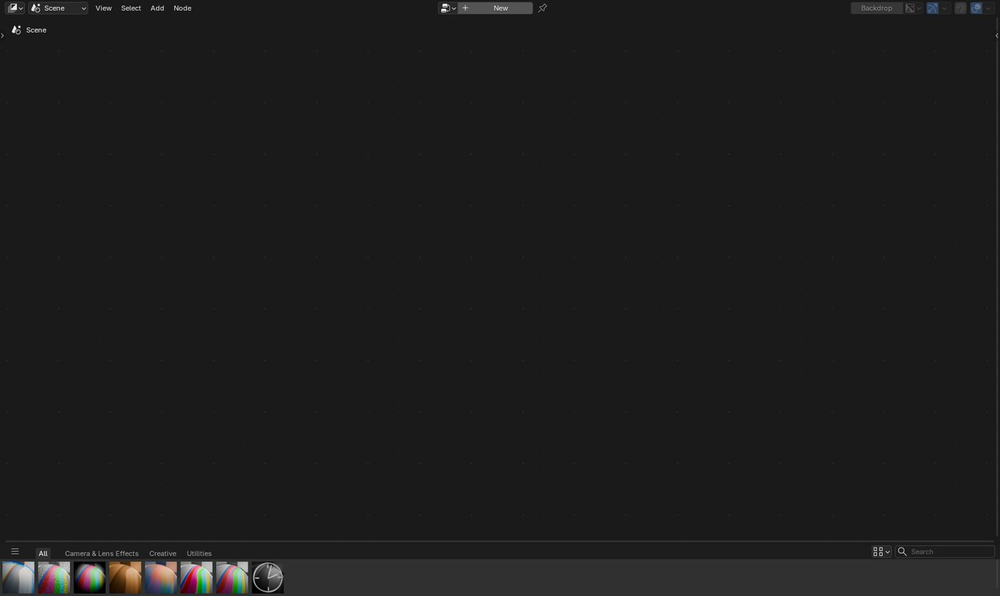
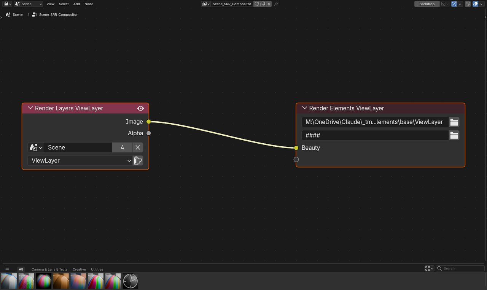
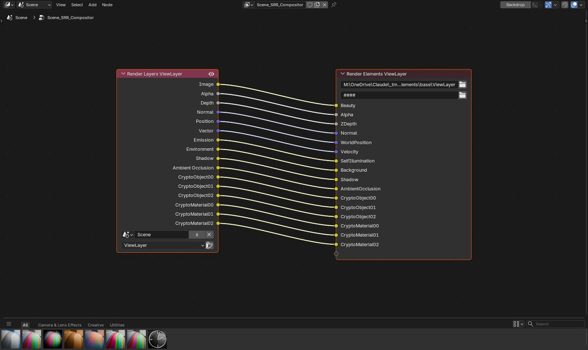
- In "Smart Render" tab > "Render Elements", turn on "Enable Render Elements".
- First, click the "Beauty Only" button (this selects only 1 element, the normal color image).
- Click "Prepare Render Elements".
- Click "Refresh Nodes".
- In the Compositor node editor, check the nodes that were built.
- Set "Quick Set" to "Composite", click "Load Quick Set", and then click "Prepare Render Elements" and "Refresh Nodes" again.
What to look for: A node that writes the view layer's images to files is created in the previously empty compositor. The "Beauty Only" button adds 1 link to the node, and loading "Composite" with "Quick Set" adds the corresponding links. The input names on the node on the right (Beauty_####, ZDepth_####, and so on) become the file names as they are, with the frame number in place of ####. The look of the 3D Viewport does not change.
ExampleSwitch the Checkboxes and "Planned elements" with "Load Quick Set"(demonstrated on Suzanne and a floor)
When you open the panel, the passes to be written out are already checked. When you choose a "Quick Set" and click "Load Quick Set", the checkboxes, "Selected elements", and "Planned elements" change together.
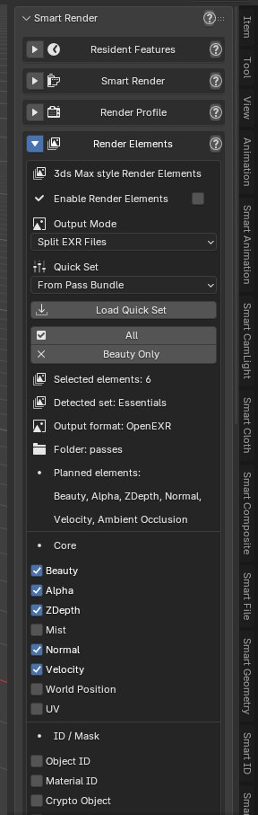
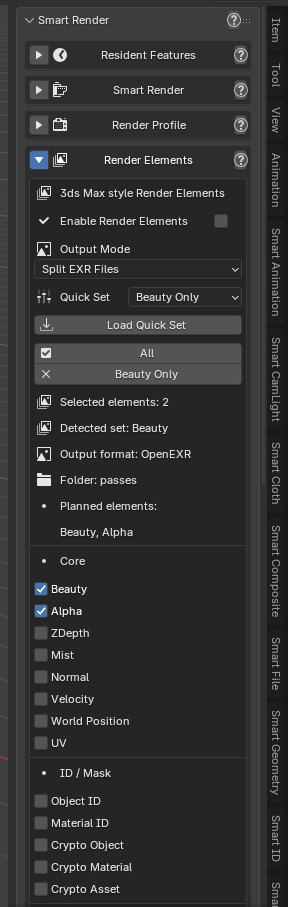
- Open "Smart Render" tab > "Render Elements".
- Look at the checkbox area, "Selected elements", and "Planned elements".
- Set "Quick Set" to "Beauty Only" and click "Load Quick Set".
What to look for: At first, 6 passes are checked, and "Selected elements" is also 6. When you load "Beauty Only" from "Quick Set", it changes to 2 passes, Beauty and Alpha, and the checks, the count, and the names decrease together (the "Beauty Only" button next to "All" selects only 1 element, Beauty). The number of checks in the checkbox area always matches the number of passes that are written out.
5-6. Network Render
Exports the settings file and run scripts for rendering on another computer or a render farm.
LocationThe section header below "Render Elements".
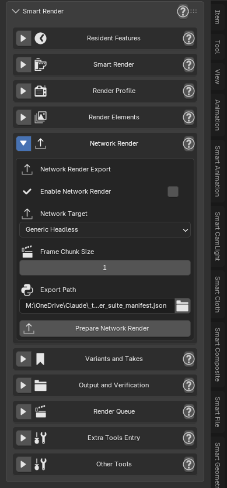
| Item | What it does |
|---|---|
| Enable Network Render | Sets whether to use the export for network rendering. |
| Network Target | Choose the type of export target ("Generic Headless", "Deadline", "Flamenco", and so on). |
| Frame Chunk Size | How many frames each chunk of work contains. It is the same value as "Frame Chunk Size" in "Execution Plan". |
| Export Path | The location where files are exported. |
| Prepare Network Render | Exports the common settings file, the per-target JSON, and the .sh / .bat scripts together. |
5-7. Workflow Recipes
Applies a safe set of settings for each purpose to the current scene with one click. You can fine-tune the details afterward in each section header.
LocationIt appears below "Network Render" only when "Show Advanced Items" is turned on (when it is off, use "Choose and Apply Recipe" in "Extra Tools Entry").
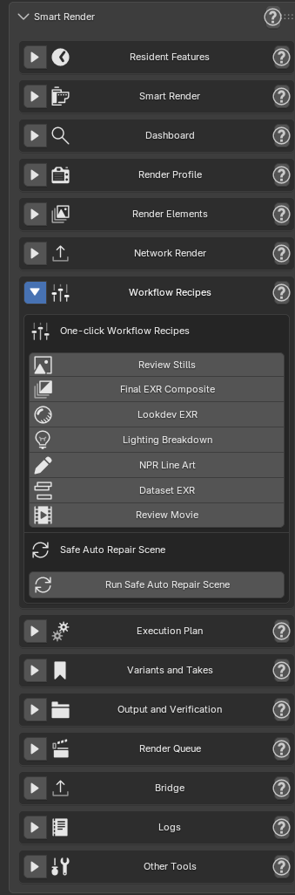
| Item | What it does |
|---|---|
| Review Stills | Keeps the current engine, renders to PNG, checks only the main image, and turns off movie encoding. |
| Final EXR Composite | Uses Cycles, Final quality, and Multilayer EXR for a final output suited to compositing. |
| Lookdev EXR | For trying out materials and lighting, writes EXR with Cycles at Preview quality and a wider set of passes. |
| Lighting Breakdown | Uses EXR settings that make it easy to check the lighting passes. |
| NPR Line Art | Uses settings that let you check Freestyle line art lightly in PNG. |
| Dataset EXR | Uses EXR settings for dataset creation that emphasize easy resuming and pass checking. |
| Review Movie | Uses a PNG frame sequence as the base and puts the FFmpeg command that makes a movie into the exported script. |
| Safe Auto Repair Scene / Run Safe Auto Repair Scene | Fixes fragile settings into a safe form, such as reversed frame ranges, duplicate file extensions, empty overrides, and duplicate selectors. |
5-8. Execution Plan
Decides the policy for which device renders, how many frames per chunk, and at what priority, and lets you check the plan.
LocationIt appears below "Workflow Recipes" only when "Show Advanced Items" is turned on.
| Item | What it does |
|---|---|
| Execution Plan Device | Choose from "Auto", "CPU", "GPU", and "Hybrid". If "Also used for local renders" appears below, it is also used for rendering on this computer. "CPU" and "GPU" are reflected in the render only with Cycles; otherwise they are written into the exported file as a guideline. |
| Priority Hint | A guideline for the priority passed to a farm or similar. |
| Frame Chunk Size | How many frames each chunk contains. |
| Concurrent Tasks Hint / Memory Hint (GB) / Job Tags / Temporal Subsamples / Spatial Subsamples / Accumulation Samples | Detailed guidelines for the run. |
| Execution Plan Preview | Shows the number of frames and chunks for each queue row. When there are no enabled queue items, it shows "No enabled queue items yet.". |
5-9. Variants and Takes
Saves combinations of camera, view layer, frame range, and so on under names, so you can recall them later or render them in a batch.
LocationThe section header below "Network Render" (below "Execution Plan" when "Show Advanced Items" is turned on).
| Item | What it does |
|---|---|
| Save Current | Creates a new variant and take from the current camera, view layer, World, and so on. |
| Update From Current | Captures the current view layer override state into the selected variant and take. |
| Apply | Applies the selected variant and take to the current scene so you can check it. |
| Remove / Add Child / Duplicate | Buttons to delete the selected item, to create a child with it as the parent, and to duplicate the same item. |
| + / Duplicate / - at the Right of the List | Add, duplicate, and remove for the list. |
| Enabled / Name / Description | Whether to use the selected variant and take, plus its name and description. The "Description" of the "Default" item that is included from the start contains "Initial scene state" (shown in Japanese when the language is set to Japanese). |
| Parent Variant | If you choose a parent, items you have not set inherit the parent's settings. The order of inheritance appears in "Inheritance Chain" below. |
| Camera / View Layer | The camera and view layer to use. |
| Custom Frames / Start Frame / End Frame | When turned on, uses a frame range for this variant and take only. |
| Variant Output Preview | Shows an example of the saved file path. It updates a moment after you change a setting. |
ExampleSave Camera Variations and Switch Them with "Apply"(demonstrated on Suzanne and a floor (2 cameras))
Use "Save Current" to name and keep the current combination of the camera and other settings, and recall it with "Apply". You can switch between the views from each camera right away and check them.
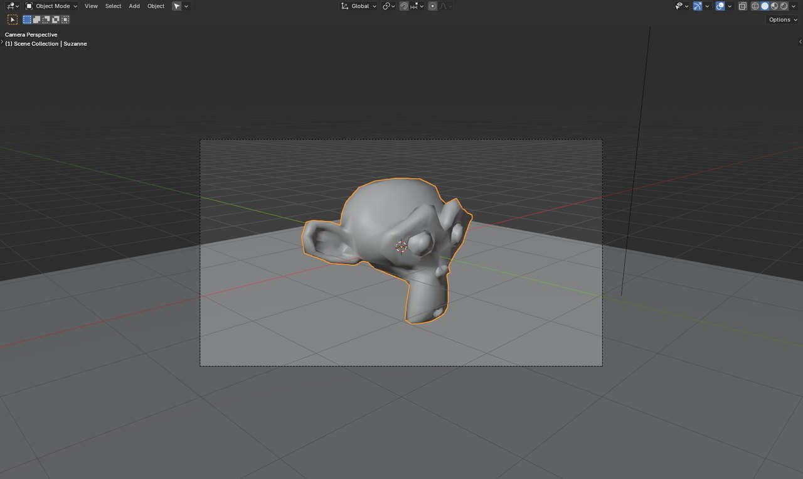
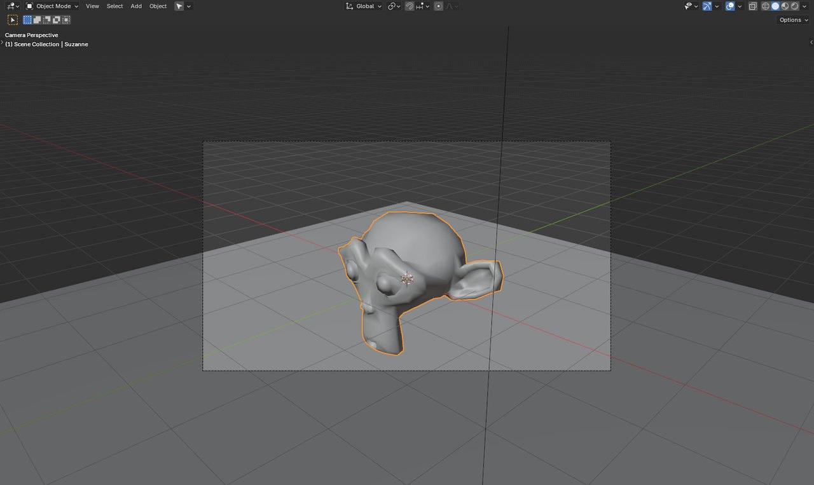
- Make the camera "Camera" the scene camera, click "Save Current" in "Variants and Takes", and enter "Take A" in "Name".
- Switch to the camera "Camera2", click "Save Current" again, and enter "Take B" in "Name".
- Select the "Take A" row in the list and click "Apply".
What to look for: When you click "Apply", the scene camera returns to the saved one, and in the view from the camera, Suzanne's face turns from facing right to facing left. If you set "Queue Source" in "Render Queue" to "Variants and Takes", you can render each saved combination.
5-10. Output and Verification
Sets the rules for the output folder and file names, the check after rendering, and movie encoding.
LocationThe section header below "Variants and Takes".
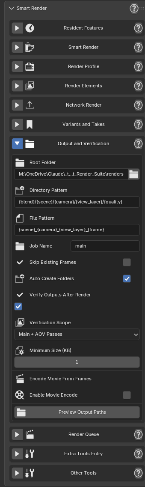
| Item | What it does |
|---|---|
| Root Folder | The topmost folder of the output. |
| Directory Pattern / File Pattern | The naming rules for folders and files. Symbols (tokens) such as {scene} (scene name), {camera} (camera name), and {frame} (frame number) are replaced with the actual names at render time. |
| Job Name | The name of the render job. |
| Skip Existing Frames | When turned on, frames that already exist are used without being rewritten, so you can resume where you left off. When "Verify Outputs After Render" is also turned on, the existing frames are checked and rewritten if they are broken. |
| Auto Create Folders | Creates the output folder if it does not exist. |
| Verify Outputs After Render | Checks that the rendered files actually exist and are not too small. When it is on, you can also set "Verification Scope" and "Minimum Size (KB)". Files smaller than "Minimum Size (KB)" are treated as failures, and if "Delete Invalid Outputs Before Retry" is on, those files are deleted. If you test with a very small resolution such as 64×64, light passes may fail by falling short of the 1 KB baseline. In that case, set "Minimum Size (KB)" to 0. |
| Encode Movie From Frames | When you turn on "Enable Movie Encode", you can choose a "Movie Preset" ("H.264 MP4", "ProRes Proxy MOV", and so on) and a "Movie File Pattern". The FFmpeg command that makes the movie goes into the scripts and settings files exported by "Network Render" and "Bridge". "Run Render Queue" alone does not make a movie. It applies only to renders of 2 or more frames. |
| Preview Output Paths | Without rendering, checks the paths that would be saved and writes them to "Logs" (the same as "Preview Output Paths" in "Smart Render"). |
5-11. Render Queue
Builds a render schedule (queue) and runs it in order from the top.
LocationThe section header below "Output and Verification".
| Item | What it does |
|---|---|
| Queue Source | How the schedule is built. Choose "Camera × Layer" (built from combinations of cameras and view layers) or "Variants and Takes" (built from the saved variants and takes). |
| Frame Mode | Choose from "Current Frame", "Scene Range", and "Custom Range". The initial setting is "Current Frame". With "Custom Range", enter the start and end frames. |
| Queue Compositing | Choose the saving method from "Auto", "Direct Output", and "Compositor / File Output". |
| View Layers | Choose "Active Only" or "All Layers". |
| Sync Render Queue | Rebuilds the schedule from the settings above. |
| Run Render Queue | Renders the enabled rows of the schedule in order from the top (the same as "Run Render Queue" in "Smart Render"). |
| Trash can button | Empties the schedule. |
| + / Duplicate / - / Up and Down Arrows at the Right of the List | Add, duplicate, remove, and reorder rows. |
| Planned Renders | Shows the number planned to be rendered. The number is recounted automatically a moment after the scene or settings change (including when you toggle a camera's "Disable in Renders"). In a scene with many objects, a short delay is added, and the previous number remains during that time. Until it has counted for the first time, it shows "—". |
| Selected Queue Item | The settings for the row selected in the list appear below this. |
| Enabled / Label / Source Type | Whether to render the selected row, the name to display, and what the row was built from ("Pair" or "Variants and Takes"). |
| Camera / View Layer | The camera and view layer used by the selected row. |
| Selected Queue Preview | Shows an example of the path saved for the selected row. It updates a moment after you change a setting. |
ExampleRun the Queue and Check the Results in "Last Queue Run"(demonstrated on Suzanne and a floor (with a camera, 1 frame only))
"Run Render Queue" renders the enabled rows of the schedule in order from the top. When it finishes, the result and counts appear in "Last Queue Run" in "Dashboard". For each row, only the output nodes this tool created for the target view layer are enabled. Outputs for other layers are temporarily turned off, and after processing they return to their original enabled or disabled state.
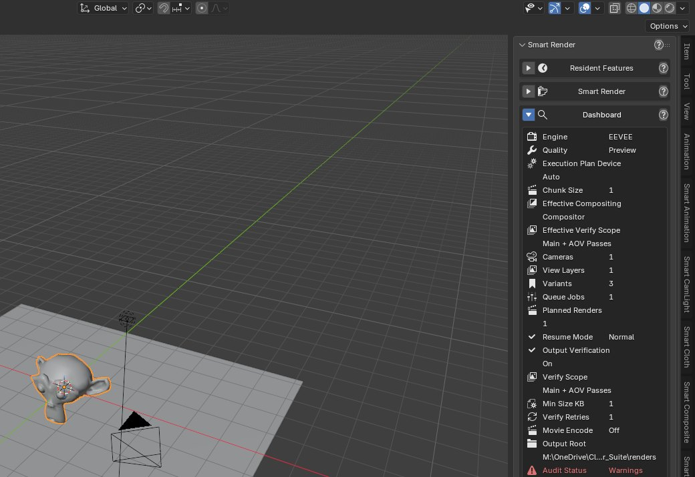
- Turn on the gear icon ("Show Advanced") in "Smart Render".
- Open "Dashboard".
- Click "Run Render Queue" in "Render Queue".
- When rendering is finished, check "Last Queue Run" in "Dashboard".
What to look for: "—" in "Last Queue Run" changes to "Finished" and the individual counts. In this example, 1 image is rendered, and "Success" is 1. If there are any failures or verification failures, this field turns red.
5-12. Extra Tools Entry
A section header that calls up the diagnosis, repair, recipe, export, and log operations while keeping the simple display.
LocationIt appears below "Render Queue" only when "Show Advanced Items" is turned off.
| Item | What it does |
|---|---|
| Analyze | Checks for output name collisions, missing files, the state of the output location, and so on. |
| Auto Repair Scene | Fixes fragile settings into a safe form. |
| AOV Nodes | Rebuilds the File Output nodes from the passes that are currently on. |
| Choose and Apply Recipe | Chooses a Workflow Recipe and applies it to the current scene. |
| Apply Pass Bundle | Applies the selected Pass Bundle to the View Layer. |
| Bridge Target / Manifest Path | The type of destination the settings file is handed to, and the location where it is saved. |
| Manifest / Bridge JSON / Scripts / Import | Export the common settings file, the per-target JSON, and the run script, and import a saved settings file. |
| Clear Logs / Show Full Advanced UI | Buttons to empty the logs and to switch to the detailed display ("Show Advanced Items"). The "Latest Audit" row above shows the diagnosis result and the number of logs. You can see the contents of the logs in the "Logs" section header of the detailed display. When nothing has been diagnosed yet, it shows "Latest Audit: Not Run / 0 Logs". |
5-13. Bridge
Exports the settings files and scripts to hand over to other software or render managers.
LocationIt appears below "Render Queue" only when "Show Advanced Items" is turned on.
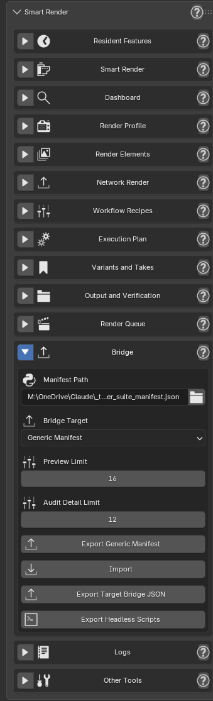
| Item | What it does |
|---|---|
| Manifest Path / Bridge Target | The location where the settings file is saved and the type of destination it is handed to ("Generic Manifest", "Maya Render Setup", "Unreal Movie Render Queue", and so on). |
| Preview Limit / Audit Detail Limit | The number of items shown in the check display. |
| Export Generic Manifest / Import | Buttons to save the current settings, Variants and Takes, and queue to JSON, or to restore them from a saved file. |
| Export Target Bridge JSON | Exports the JSON for the chosen destination. |
| Export Headless Script | Creates a script (.sh / .bat) that runs the current queue in Blender without a screen (headless). |
5-14. Logs
Lists the notices, warnings, and errors produced by diagnosis, preparation, and rendering.
LocationIt appears below "Bridge" only when "Show Advanced Items" is turned on.
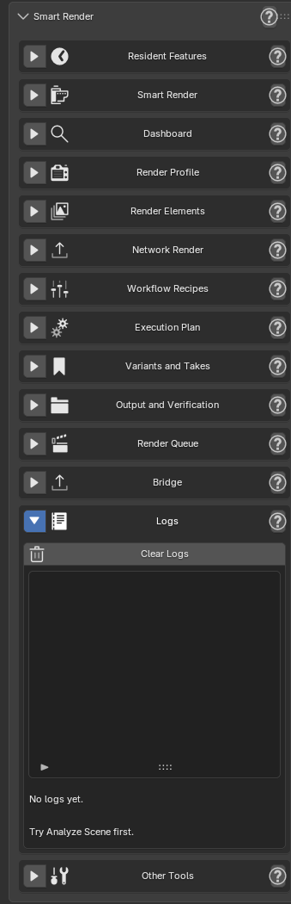
| Item | What it does |
|---|---|
| Clear Logs | Empties the list. |
| Log List | Lines up the recorded contents. When you select a row, the time and full text of that row appear below the list. When there is nothing yet, it prompts you to click "Analyze Scene" first. |
5-15. Other Tools
Contains helper tools related to rendering. You load only the tools you need, when you need them.
LocationThis is the bottommost section header of the "Smart Render" tab.
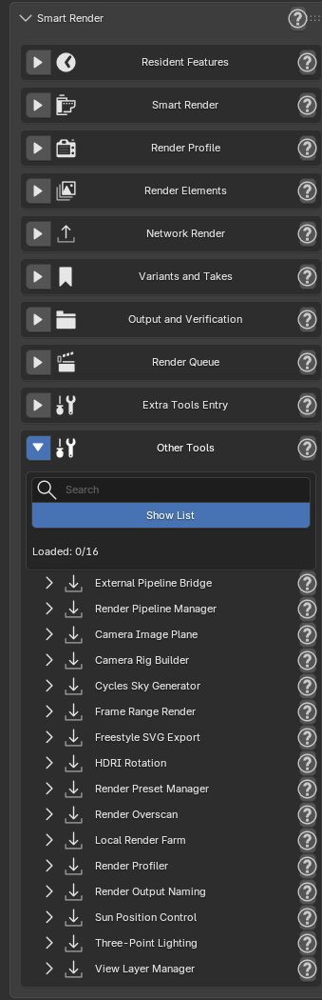
| Item | What it does |
|---|---|
| Search Field (magnifying glass) | Narrows the list by tool name. |
| Show List | Toggles whether the tool list is shown or hidden. When it is highlighted in blue, the list is shown. It is not a button that enables or disables the tools themselves. |
| Loaded Count | Shows the number of loaded tools, as in "Loaded: 0/16". |
| Search Matches | While there is text in the search field, shows the number of tools left in the list, as in "Search Matches: 1/16". When nothing matches, it shows that no tool matches. |
| Loaded / Ready | The state of each tool. It is shown when you click the ">" at the left of the tool name row to open it. A tool that is "Ready" has not been loaded yet. |
| Load | A button that appears when you open a tool's name row. Click it to load that tool, and its operation buttons appear in the "Quick Access" box. For some tools, a button with the tool's panel name and a "∨" also appears below it, and clicking it opens that panel in a small window. |
| Camera Image Plane | Creates an image plane that moves with the camera. |
| Create Camera Rig | Creates dolly, crane, and 2D camera rigs. |
| Create Cycles Sky | When you click "Create Procedural Sky", the engine is switched to Cycles, a sky world with clouds and a sun is created, and it becomes the scene's world. In "Settings" below, you can adjust the brightness, sky color, clouds, and sun of the sky you made last. If it fails, the scene is not changed. Clicking the "Dynamic Sky" button below "Quick Access" opens the same settings as "Create" in a small window. |
| Frame Range Render | Renders only the frames you specify, such as "1,2,5-8". |
| Freestyle SVG Export | Exports Freestyle line art to SVG. |
| HDR Rotation | Rotates the direction of the environment image (HDRI) in the 3D Viewport. |
| Render Preset Manager | Saves, loads, and compares render settings. When you load a preset, a window first appears that lists the settings that differ from the current scene by category, and you can choose which settings to apply with the checkbox for each item. With "Settings" at the top of the window, choose either "All Available Settings" or just one category such as the engine. |
| Render Overscan | Renders with a margin added for compositing. |
| Local Render Farm | Runs multiple headless Blender instances on your own computer to render. |
| Render Profiler | Measures how heavy the viewport and renders are. |
| Render Output Naming | Builds output names and folders from a template. |
| Sun Position Control | Determines the sun position from location, date, and time. |
| Three-Point Lighting | When you click "Create Three-Point Lighting", three lights, Key, Fill, and Back, are created around the selected object. The direction of the lights is determined from the camera position; when there is no camera, or the camera is at the same position as the object or directly above it, the lights are placed as seen from the front (-Y side). When you change a value in "Settings" below, only the changed item is applied immediately to the three lights made last. "Height" and "Distance" are the light positions. "Base Energy" is the strength of the brightest light. "Contrast" is the difference in brightness: at 0 the three lights are equally bright, a positive value weakens the Fill and Back, and a negative value weakens the Key. "Left Angle", "Right Angle", and "Back Angle" are the angles from the camera direction to each light. Under "Key Light" and "Fill & Back Light", choose the light type with "Type" and set the shape and size of the emitting surface with "Shape" and "Size" (depending on the type, these change to items such as radius and spot angle). Lights you moved by hand do not return to their positions when you change "Base Energy" or "Contrast". Lights that you renamed or deleted are not affected. |
| View Layer Manager | Helps with switching and managing view layers. |
ExamplePlace Three Lights Around the Selected Object with "Three-Point Lighting"(demonstrated on Suzanne and a floor (with a camera))
Place the three standard photography lights around the selected object at once: Key (main light), Fill (supporting light), and Back (light from behind). The direction of the lights is based on the camera position. If there is no camera, or if the camera is at the same position as the object or directly above it, the lights are placed as if viewing the object from the front (-Y side).
- Select Suzanne.
- In "Smart Render" tab > "Other Tools", expand the "Three-Point Lighting" row and click "Load".
- Click "Create Three-Point Lighting" in the "Quick Access" area that appears.
What to look for: Suzanne, which was pitch dark with no lights, is now lit by the three lights placed around it (Key, Fill, and Back), and its shape and shading are visible. The zoomed-out view shows that the three lights are placed in positions surrounding Suzanne.
ExamplePlace Three-Point Lighting Even in a Scene with No Camera(demonstrated on Suzanne (no camera))
You can use "Create Three-Point Lighting" even in a scene with no camera. It places the three lights as if viewing the object from the front (-Y side).
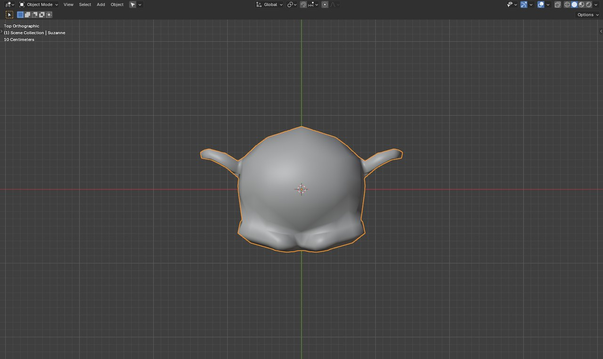
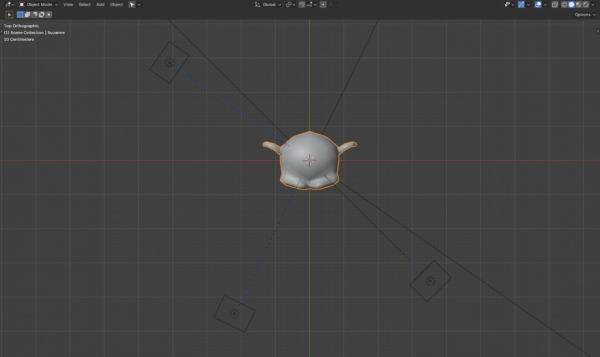
- Select Suzanne.
- In "Smart Render" tab > "Other Tools", expand the "Three-Point Lighting" row and click "Load".
- Click "Create Three-Point Lighting".
What to look for: The Key and Fill lights are placed on Suzanne's front side, and the Back light behind it. Even without a camera, the lights are arranged so that the light comes from the side of the face.
ExampleChange the Three-Point Lighting Values after Creation(demonstrated on Suzanne and a floor)
When you change values in "Settings" below "Create Three-Point Lighting", only the items you changed are applied right away to the three lights you created last. You do not need to create them again.
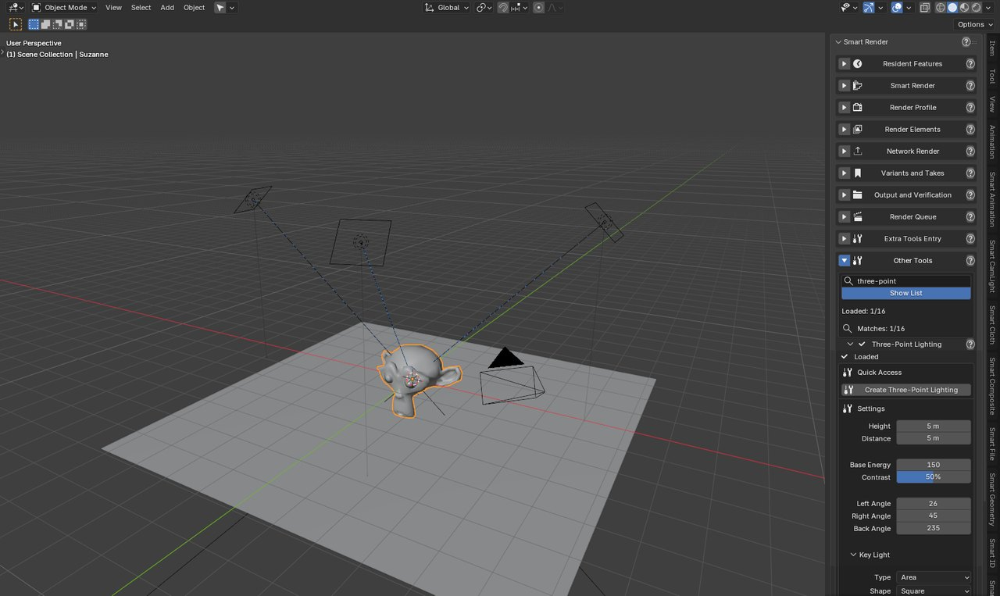
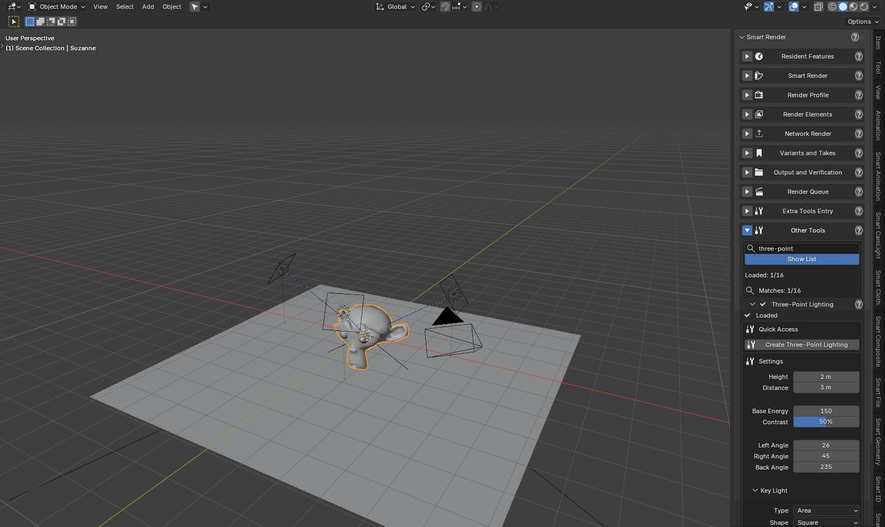
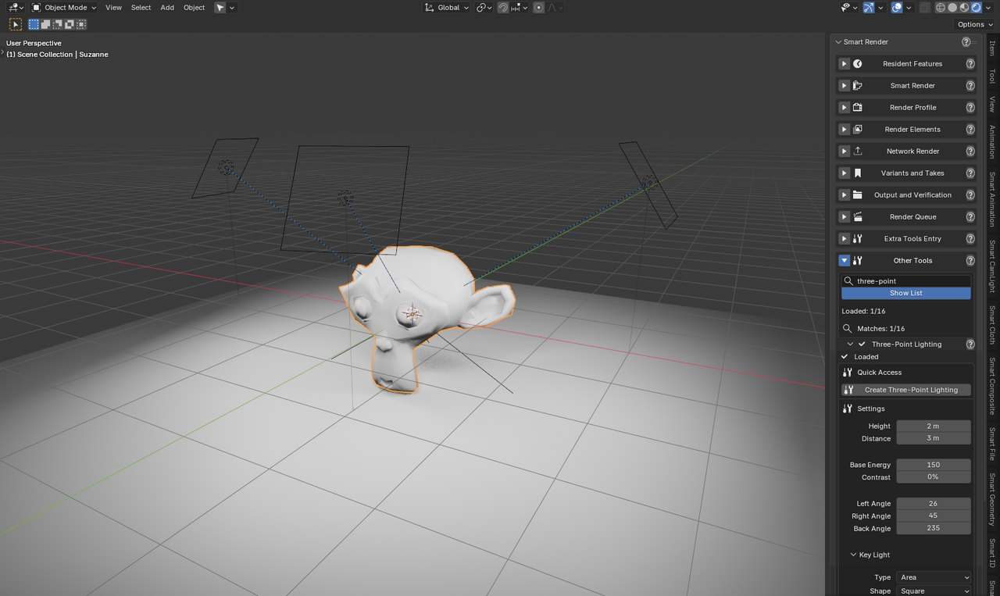
- Select Suzanne.
- Type "three-point" in the search field of "Other Tools" to narrow down the list ("Matches: 1/16" appears), then expand the "Three-Point Lighting" row and click "Load".
- Click "Create Three-Point Lighting".
- Set "Base Energy" in "Settings" to 150 (the positions of the lights do not change).
- Change "Height" and "Distance".
- Set "Contrast" to 0 (the three lights become equally bright).
- Set "Contrast" to 80% (the Fill and Back lights become weaker).
What to look for: Changing "Height" and "Distance" moves the three lights right away. "Contrast" is the difference in brightness: at 0 the three lights are equal, positive values make Fill and Back weaker, and negative values make Key weaker. Compare them with the values in the N panel on the right.
ExampleCreate a Cloudy Sky in One Click with "Cycles Sky Generator"(demonstrated on Suzanne and a floor)
Create a sky with clouds and a sun for Cycles. When you click the button, the engine switches to Cycles, and the new sky becomes the scene's world.
- In "Smart Render" tab > "Other Tools", expand the "Cycles Sky Generator" row and click "Load".
- Click "Create Procedural Sky".
- Adjust the colors and clouds using options such as "Sky color" in "Settings", which appears below.
What to look for: The background changes to a cloudy sky, and the sky's light also falls on Suzanne. When you change the sky color in "Settings", the colors of the background and the light change together.
ExampleBuild a Dolly-Style Camera Rig with "Camera Rig Builder"(demonstrated on Suzanne)
Create a camera with control bones (a rig) that make it easy to move. If you click "Build Camera Rig" as it is, you get a rig that you use by sliding it along like a cart (dolly).
- In "Smart Render" tab > "Other Tools", expand the "Camera Rig Builder" row and click "Load".
- Click "Build Camera Rig" in the "Quick Access" area that appears.
What to look for: A camera and the control bones for moving it (orange arrow and ring shapes) are created together. The ring at the back right is the target point, and the camera is set to face this point.
Other Screens
6. Common Tasks
Render the Current Frame
First, save the current frame as an image in a fixed location.
- Open "Render Profile", choose "Quality Preset" and "Image Format", and click "Apply Core Settings".
- Open "Output and Verification" and enter the output location in "Root Folder".
- Open "Render Queue" and check that "Frame Mode" is set to "Current Frame".
- Open "Smart Render" and click "Prepare Scene Setup".
- Click "Preview Output Paths", check the path to be saved in "Selected Queue Preview" in "Render Queue", and then click "Run Render Queue".
Result: The image is saved under "Root Folder" with the name set by "Directory Pattern" and "File Pattern". When there are multiple renderable cameras, one image is saved for each camera.
Render the Whole Animation
Renders from the start frame to the end frame of the scene.
- Open "Render Queue".
- Set "Frame Mode" to "Scene Range".
- Click "Sync Render Queue".
- Select the row you want to check in the list, click "Preview Output Paths" (in the "Output and Verification" section header), and check the output location in "Selected Queue Preview".
- Click "Run Render Queue".
Result: The enabled rows of the list are rendered frame by frame, in order from the top.
Resume a Render That Stopped Partway
- Open "Output and Verification" and turn on "Skip Existing Frames".
- In "Render Queue", click "Run Render Queue".
Result: Frames that are already saved are reused, and the remaining frames are rendered. When "Verify Outputs After Render" is on, broken frames are also rewritten.
Save Setting Differences and Render Them Separately
Render combinations with different cameras or frame ranges under names you choose.
- Set up the camera and other items in the state you want to render.
- Open "Variants and Takes" and click "Save Current".
- Enter a "Name" and, if needed, turn on "Custom Frames" and enter the start and end.
- Save the other combinations in the same way.
- In "Render Queue", set "Queue Source" to "Variants and Takes" and click "Sync Render Queue".
- Click "Run Render Queue".
Result: Rendering is done for each saved variant and take.
Render Compositing Passes Together
- Open "Render Elements" and turn on "Enable Render Elements".
- In "Quick Set", choose an option such as "Composite" and click "Load Quick Set".
- Turn off the checkboxes of passes you do not need.
- Click "Prepare Render Elements".
- In "Render Queue", click "Sync Render Queue".
- In "Smart Render", run "Preview Output Paths" and then click "Run Render Queue".
Result: The chosen passes are saved in the form chosen in "Output Mode" (Split EXR Files or Multilayer EXR).
7. Troubleshooting
- I cannot find the "Dashboard" or "Logs" section headers.
- The section headers for advanced users appear only when "Show Advanced Items" is turned on. Toggle it with the gear icon in the "Smart Render" section header, or with "Show Advanced Items" in "Render Profile".
- The Render Queue stays empty ("Queue Jobs" is 0).
- Click "Sync Render Queue" in "Render Queue" to build the schedule from the current settings. When "Queue Source" is "Variants and Takes", save variants and takes first.
- I click "Run Render Queue", but nothing is rendered.
- The "Current Scene (Disabled)" row that is included at first is set not to render. First click "Prepare Scene Setup", or "Sync Render Queue" in "Render Queue", to build the rows to render. Rendering also stops without starting when the preliminary diagnosis finds an error. In that case, turn on "Show Advanced Items", open the "Logs" section header, and check the contents.
- I want to check the output location and file names without rendering.
- Click "Preview Output Paths". Without actually rendering, it checks the paths that would be saved and writes them to "Logs". You can also see the output location of the selected row in "Selected Queue Preview" in "Render Queue".
- Are files overwritten if a file with the same name exists?
- In the initial state, existing files are overwritten. Rows in the queue whose output names overlap are given different names to avoid the conflict. If you do not want to overwrite, turn on "Show Advanced Items" and turn off "Overwrite Existing Files" in "Output and Verification". When it is off, files are saved with extra characters added after the name.
- A tool in "Other Tools" shows "Ready".
- That tool has not been loaded yet. Click "Load" and its operation buttons appear.
- The open and closed state of the section headers stays the same the next time I open Blender.
- When "N-panel State Save" in "Resident Features" is "Enabled", the open and closed state and settings are saved. If you do not want them kept, set it to "Disabled".
- Blender feels heavy.
- Open "Resident Features" and turn off the items you are not using. The processing that runs automatically in the background stops.
For problems common to every add-on, such as an add-on not appearing or the interface language not changing, see "Troubleshooting" in the SmartTools Overall Specification.
8. Glossary
- Render
- Writing out a scene as an image or movie.
- Render Queue
- The render schedule. It renders in order from the top row.
- View Layer
- A layer for rendering within one scene, with different things shown.
- Variants and Takes
- A saved, named combination of camera, frame range, quality, and so on.
- Pass / AOV / Render Elements
- Images such as depth, normals, and masks that are rendered separately from the color image. They are used in compositing.
- Pass Bundle
- A frequently used combination of passes.
- File Output Node
- A node in the Compositor (the compositing screen) that saves images to files.
- EXR (OpenEXR)
- An image format that can keep a lot of color information. Multilayer combines multiple passes into one file.
- Cryptomatte
- A pass from which you can later extract masks for each object or material.
- Token
- A symbol such as {scene} or {frame}. It is replaced with the actual name or number at render time.
- Manifest
- A JSON file in which settings and a schedule are written together.
- Headless
- Running Blender without showing a screen.
- Chunk (Frame Chunk)
- The unit that sets how many frames each part of a render contains.
9. Appendix: Version, Checksum and Limitations
| Add-on | SmartRender Suite (smart_render_suite) |
|---|---|
| Version | 1.0.0 |
| ZIP | SmartRenderSuite_1.0.0.zip |
| Size | 773,932 bytes |
| SHA256 | 0d880e680668acf0c540773d9341e8f4db33c1cda7f01f1a743c9b3fa8888415 |
Limitations and Notes
- The section headers for advanced users and the detailed settings are shown only when "Show Advanced Items" is turned on.
- "Network Render" and "Bridge" only go as far as exporting settings files and scripts.
- The device policy (CPU, GPU) in "Execution Plan" is reflected in rendering on this computer only with Cycles.
- The tools in "Other Tools" do not show their operation buttons until you click "Load".
- The movie from "Encode Movie From Frames" is not made by "Run Render Queue" on this computer. It is made by the FFmpeg command in the exported script or settings file.
- The "Logs" list can be seen only when "Show Advanced Items" is turned on.
SmartRender Suite Manual v1.0.0 / Built 2026-11-19